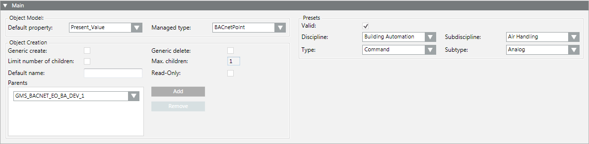
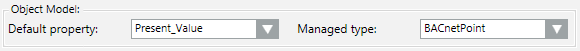
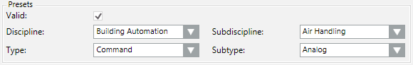
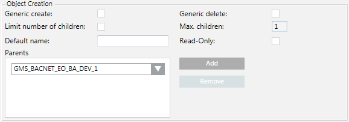

Define the Main Settings of an Object Model
Once you have an object model available at your customization level--whether a new one or a copy of an existing one--you can begin to configure or edit its settings. The main expander contains some important settings for the object model, including its presets for object classification, and rules defining how child objects are created.
- The object model you want to configure is available at your customization level.
- In System Browser, select the object model, for example: Project > System Settings > Libraries > L4-Project > Access > Common > Object Model > AC Door Set.
- Complete the following:
Open the Main Expander
- Select the Models & Functions tab.
- Open the Main expander. For details about these fields, see Main Expander of an Object Model.

Configure Default Property and Managed Type
- Select a default property to be used for this type of object from Default Property.
- Select a type from Managed Type to ensure that the correct application for this type is selected.
- Click Save
 .
.

Define Presets
- Select an option in Discipline.
- Select an option in Subdiscipline.
- Select an option in Type.
- Select an option in Subtype.
- Select the Valid check box.
- Click Save .


Entries in Presets are taken over as the basic setting for Functions and instances.
Select the settings as per your search criteria.
Define Object Creation
- In the Object Creation group box, click Add.
- In the drop-down list, select a parent element.
- Repeat steps 1 and 2 for additional parent elements.
- Select or clear the Generic create and Generic delete check boxes.
NOTE: Permits the creation or deletion of an object in the Object Configurator. - Select or clear the Limit number of children check box. You must also define the limits for an activated check box (unchecked = unlimited).
- Enter as needed a Default name.
NOTE: This default name is taken over when creating a child object. - Check or clear the Read-Only check box.
NOTE: Active = Default name cannot be edited for a child object. - Click Save .

- The corresponding parents must always be defined for the given object model.
- Recursion from the same object model is possible.
- The object model aggregator is required in the views as hierarchy object and should therefore be added for most cases.